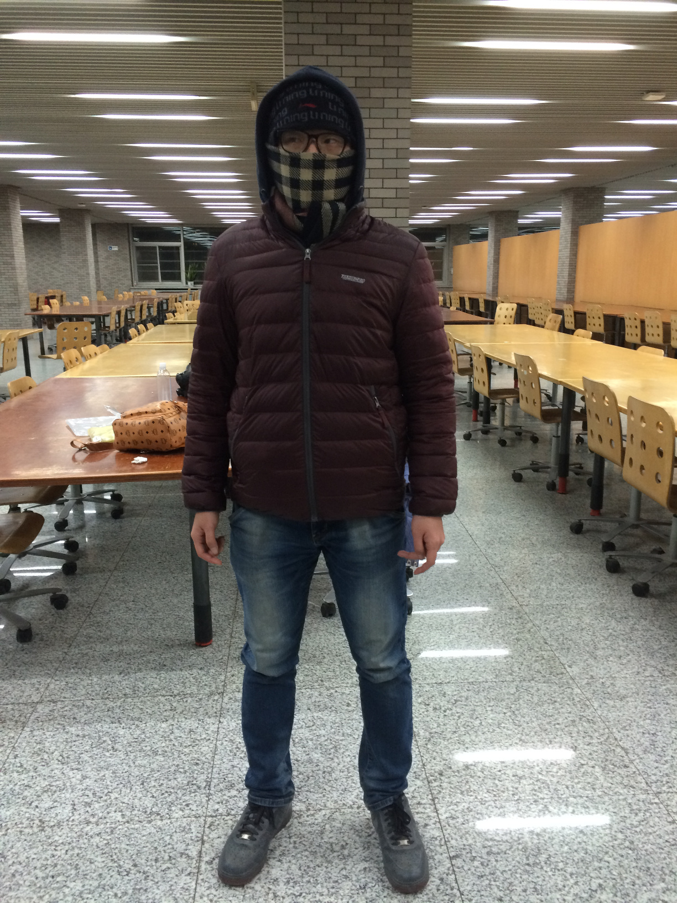
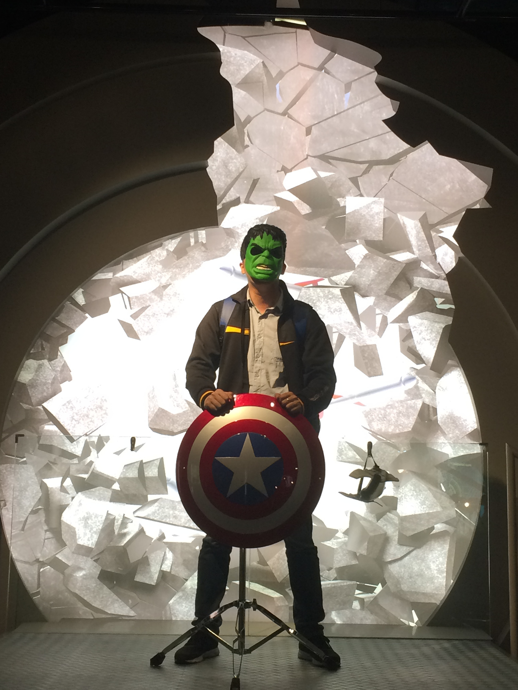

|
Qingchuan
Liu |
|
|
| Master of Software Engineering
School of Software Engineering (SSE) University of Science and Technology of China (USTC) email: qc1iuOne-gmail.com |
ResearchTopics:
|
Short BioI kept dreaming of a world I thought I'd never see. And then, one day... I got in. |
Working Experience
|
Awards and Honors
|
|
|
| Last modified: Sep 4, 2017 |